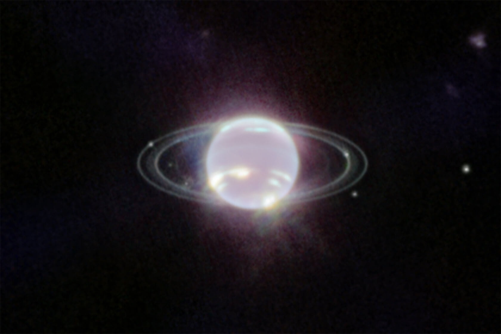
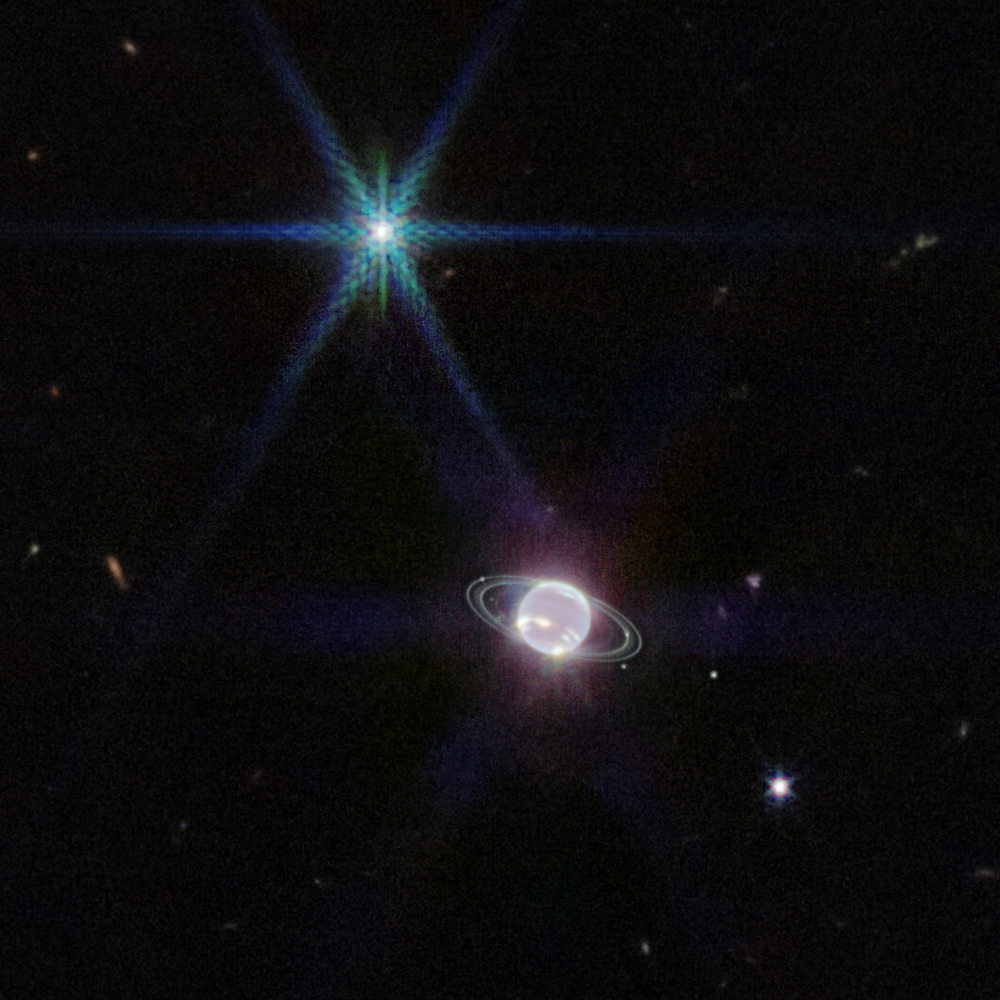
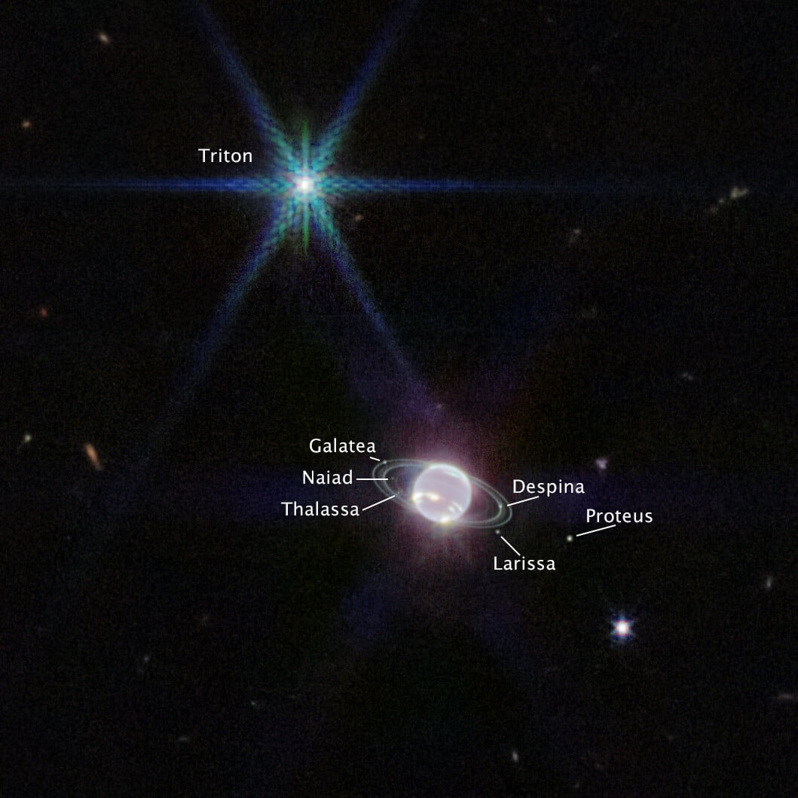
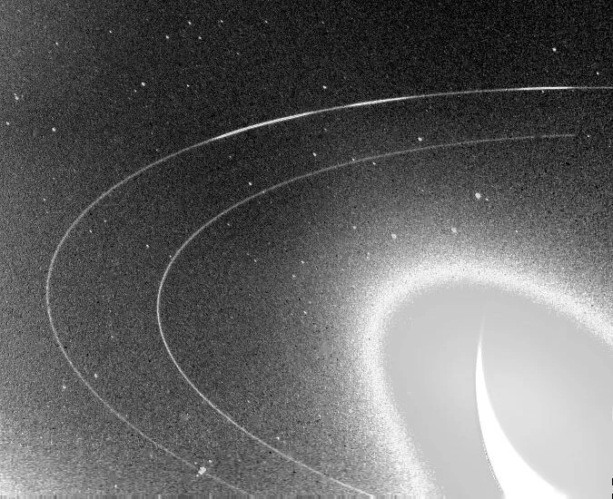
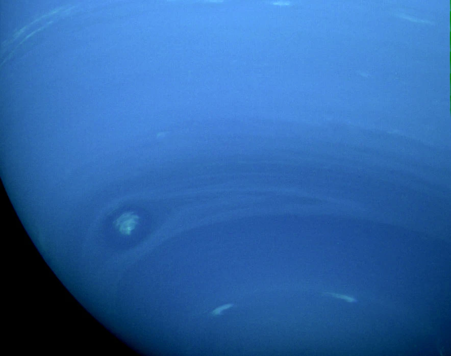

အခုထိ ဂျိမ်းစ်ဝက်ဘ် က ပေးပို့တဲ့ ဓါတ်ပုံ အများစုဟာ အဝေးက ဂလက်ဆီ တွေနဲ့ နက်ဗြူလာ ဓါတ်ငွေ့ တိိမ်တိုက် တွေရဲ့ အနီအောက်ရောင်ခြည် (infrared image) ဓါတ်ပုံတွေက အများစု ဖြစ်ပါတယ်။
လွန်ခဲ့တဲ့ သီတင်းပတ် အနည်းငယ်က ဂျူပီတာ ခေါ် ကြာသပတေးဂြိုဟ်ရဲ့ လှပတဲ့ ဓါတ်ပုံကို တွေ့ခဲ့ ကြရ ပြီးတဲ့နောက် နက္ခတ်ဝါသနာရှင်တွေဟာ နောက်ထပ် နေအဖွဲ့အစည်း ထဲက ဘယ်ပုံတွေ ထပ်တွေ့ရ အုံးမလဲ ဆိုတာကို စိတ်ဝင်တစား စောင့်စား နေခဲ့ ကြပါတယ်။

နက္ခတ် ပညာရှင် တွေဟာ ဒီပုံကို ၁၉၈၉ ခုနှစ်က ဗွိုင်ယေဂျာ အာကာသယာဉ် ကနေ ရိုက်ကူး ပေးပို့လိုက်တဲ့ ဓါတ်ပုံနဲ့ နှိုင်းယှဉ် နေကြပါတယ်။
အခုပုံဟာ နက်ပ်ကျွန်းရဲ့ ဂြိုဟ်ခါးပတ်ကို အနီအောက် ရောင်ခြည်နဲ့ ရိုက်ကူးထားတဲ့ ပထမဆုံး ဓါတ်ပုံ ဖြစ်ပါတယ်။ အရင် ဗွိုင်ယေဂျာက ရိုက်ကူးထားတဲ့ ပုံမှာတော့ နက်ပ်ကျွန်းရဲ့ ဂြိုဟ်ခါးပတ်ကို မှုန်ပြပြ လေးပဲ မြင်တွေ့ ခဲ့ကြရပါတယ်။

ဒီလို ဖြစ်ရတာက JWST က ဓါတ်ပုံရိုက်ဖို့ အသုံးပြုတဲ့ ကင်မရာဟာ မျက်စေ့နဲ့ မြင်ရတဲ့ အလင်းကို ဖမ်းယူတာ မဟုတ်ပဲ မျက်စေ့နဲ့ မမြင်နိုင်တဲ့ အနီအောက် ရောင်ခြည် ကို ဖမ်းယူထားတာကြောင့် ဖြစ်ပါတယ်။ ဒီ ကင်မရာဟာ Near-Infrared Camera (NIRCam) အမျိုးအစား ဖြစ်ပြီး လှိုင်းအလျား ၀.၆ ကနေ ၅.၀ မိုက်ခရွန် (0.6 to 5 microns) လှိုင်းအလျား ရှိတဲ့ အနီး အနီအောက် ရောင်ခြည်ကို ဖမ်းယူနိုင်ဖို့ တီထွင်ထားတာ ဖြစ်ပါတယ်။

ဒီ မိသိန်း ဓါတ်ငွေ့ဟာ အနီအောက် ရောင်ခြည်ကိုလဲ စုပ်ယူတာမို့ အခုပုံမှာ ဂြိုဟ်ရဲ့ အလယ်ပိုင်း နေရာတွေဟာ မှောင်နေတာ ဖြစ်ပါတယ်။ နက်ပ်ကျွန်းရဲ့ လေထု အမြင့်ပိုင်း လွှာတွေထဲမှာတော့ မိသိန်းဓါတ် ပါဝင်မှု နည်းပါး သွားတာကြောင့် နက်ပ်ကျွန်းရဲ့ အနားပတ်ခြာလည်က လေထု အမြင့်ပိုင်းက တိမ်တွေက ပြန်လာတဲ့ အနီအောက် ရောင်ခြည်ကို အလင်းရောင် ကွင်းလေး အနေနဲ့ ပုံမှာ မြင်တွေ့ ရတာပဲ ဖြစ်ပါတယ်။

ထရစ်တွန် လကို နိုက်ထရိုဂျင် အခဲ (nitrogen ice) အမြောက်အများနဲ့ ဖုံးအုပ် ထားပါတယ်။ ဒါ့ကြောင့် သူ့ရဲ့ မျက်နှာပြင်ကို ကျရောက်တဲ့ နေရဲ့ အလင်းရဲ့ ၇၀% ခန့်ကို အလင်း ပြန်ပေးပါတယ်။ ဒါ့ကြောင့် သူ့ကို လင်းထိန် တောက်ပစွာ ဖြင်တွေ့ ကြရတာ ဖြစ်ပါတယ်။

နာဆာ အဖွဲ့ကြီးရဲ့ ထုတ်ပြန်ချက်အရ လာမယ့် ၂၀၂၃ ခုနှစ်ထဲမှာ ဂျိမ်းစ်ဝက်ဘ် တယ်လီစကုပ် ကြီးကနေ နက်ပ်ကျွန်း နဲ့ ထရစ်တွန် လတို့ကို လေ့လာဖို့ အစီအစဉ် ရေးဆွဲ ထားတယ်လို့ သိရပါတယ်။
Ref: Neptune’s rings are incredible in brand new Webb Telescope image | Sky at Night